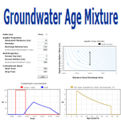
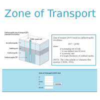
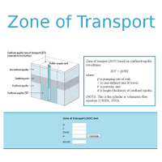

Public-Supply-Well Vulnerability to Contamination
The USGS National Water Quality Assessment (NAWQA) program has completed an intensive study
of public-supply well vulnerability to contaminants in groundwater. Understanding what factors
affect public-supply-well vulnerability to contamination can lead to opportunities to
enhance source water assessment and protection efforts. Such understanding also can help source
water protection partners anticipate and measure protection-related outcomes. These Decision
Support System Tools, based on the results of the USGS NAWQA study, are designed to help
and managers measure and address the vulnerabilities of public-supply wells.
Toolbox Quick Links


 

Decision Support System Help
All information is based on the USGS NAWQA study "The Quality of Our Nation's Water — Factors
Affecting Public-Supply-Well Vulnerability to Contamination: Understanding Observed Water Quality and
Anticipating Future Water Quality" by Sandra M. Eberts, Mary Ann Thomas and Martha L. Jagucki (2012).
In case of conflicting information, the USGS Circular takes precedence over this educational website.
To get help on using this website, please contact us at wellassessment@usgs.gov
|